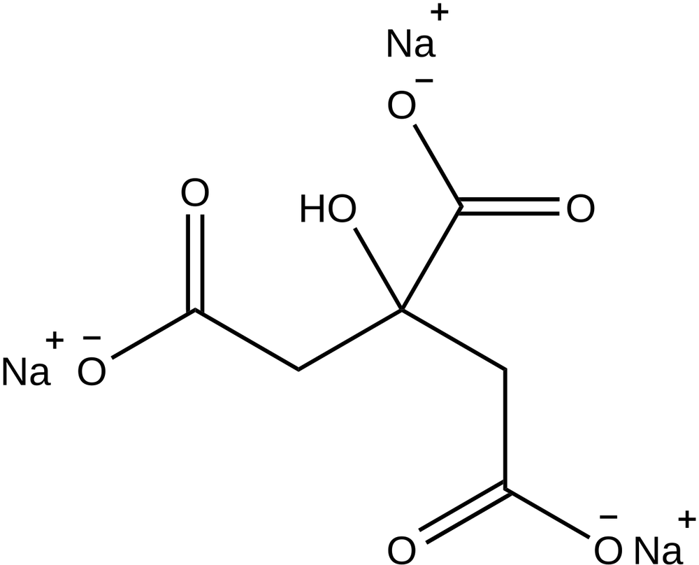

구연산나트륨 (Sodium Citrate)

쉽게 풀면
구연산나트륨은 흰색 결정성 가루로, 레몬이나 감귤류에 들어있는 구연산(시트르산)에 나트륨이 결합된 형태이다. 물에 잘 녹으며 짭짤하면서도 약간 신맛이 도는 특유의 맛을 가지고 있다. 이 물질은 용액의 pH를 특정 범위에서 안정적으로 유지시키는 완충 작용을 하며, 동시에 칼슘이온을 붙잡아 혈액이 굳지 않도록 막는 항응고 성질도 지니고 있다. 식품첨가물로도 흔히 쓰일 만큼 안전성이 높은 물질이다.
왜 중요한가
혈액 채취관에 항응고제로 넣어 혈액응고 검사(혈액응고시간 측정)를 가능하게 하고, 생화학·분자생물학 실험에서 pH를 일정하게 유지하는 완충용액의 주성분으로 널리 쓰이기 때문에 임상검사와 실험실 연구 전반에서 필수적인 시약이다.
무엇이고 어디서 작용하나
- 구연산나트륨은 구연산(시트르산)의 나트륨염을 통틀어 가리킨다. 가장 흔한 것은 셋째, 곧 구연산삼나트륨이다. 일나트륨, 이나트륨, 삼나트륨 세 형태가 있고 합쳐 E331이라는 식품 첨가물 번호를 갖는다.
- 구연산은 화학식 C6H8O7의 무색 약산이며 감귤류에 자연적으로 들어 있다. 생화학에서는 모든 호기성 생물 대사의 구연산 회로 중간체이다. 구연산염(citrate)은 구연산의 염, 에스터, 음이온을 가리키며 음이온은 C6H5O73−로 쓴다.
- 구연산은 1784년 카를 빌헬름 셸레가 레몬 즙에서 결정으로 처음 얻었다. 레몬과 라임에는 건조 중량의 8%까지 들어 있다.
주요 기능과 기전
- 항응고. 칼슘 이온과 결합해 응고 과정을 막는다. 저장 중인 헌혈 혈액이 굳지 않게 하고, 성분 채집(apheresis) 기계의 관에 혈전이 생기지 않게 하는 첨가물로도 쓴다. PT(INR), APTT, 피브리노겐 같은 검사용 혈액을 구연산나트륨이 든 튜브에 채취한다.
- 식품. 음식과 음료에서 산도 조절제와 기름의 유화제로 쓴다. 일반적으로 안전하다고 보며 미국 식품의약국이 GRAS로 지정했다.
- 의료. 혈액과 소변의 과잉 산을 중화하는 알칼리화제로 중탄산나트륨 대신 쓰며, 대사성 산증과 만성 신장병 치료에 응용된다.
- 나노 입자. 올레산과 함께 자성 Fe3O4 나노 입자의 피복 합성에 쓴다.
연구에서 다루는 방식
- 시약으로 쓸 때는 어떤 염(일·이·삼나트륨)인지, 농도, 용액을 만든 방법을 적는다. 응고 검사에서는 채취 튜브의 종류를 밝힌다.
- 구연산 자체는 구연산염 형태에서 킬레이트제(금속 이온을 붙잡는 물질)로도 쓰인다. 연간 200만 톤 넘게 생산되며 산 조절제, 향료, 보존제로 널리 쓰인다.
- 산업 생산은 1917년 제임스 커리가 아스페르길루스 니게르 균주가 구연산을 효율적으로 만든다는 것을 발견하면서 곰팡이 발효로 옮겨 갔다. 지금도 주요 경로이다.
논문에서는 이렇게 쓰입니다
실제 논문에서
국내 학술지 논문에서 이 용어가 쓰인 문장을 그대로 옮겼다. 제목·학술지·연도와 원문 링크를 함께 적었다.
“응고검사에는 구연산나트륨이 항응고제로 이용되고 혈액학적 검사에는 EDTA가 이용되는데 그 이유는 구연산나트륨이 5번과 8번 응고인자를 다른 항응고제에 비해 안정하게 유지하기 때문이고, EDTA는 혈액세포성분을 잘 보존하기 때문이다.”
EDTA 검체와 구연산 검체에서 Owren 방법으로 측정한 프로트롬빈 시간의 상관성, Annals of Laboratory Medicine, 2002 · KCI 한국학술지인용색인 · 원문 보기 ↗
조금 더 깊게 보면
구연산나트륨은 구연산(약산)과 그 짝염기 사이의 평형을 이용해 완충 작용을 하며, 첨가하는 구연산과의 비율을 조절함으로써 원하는 pH 범위의 완충용액을 만들 수 있다. 항응고 작용의 원리는 시트르산이온이 혈액 응고에 필수적인 칼슘이온을 킬레이트로 붙잡아 응고 연쇄반응을 차단하는 데 있다. 구연산나트륨은 칼슘 이온을 붙잡아 응고 인자의 작용을 막는 킬레이트 작용이 있어, 혈액 채취관에서 혈액이 굳지 않도록 하는 항응고제로 흔히 쓰인다. 이 항응고 효과는 이후 칼슘을 다시 첨가하면 응고가 재개되는 가역적 성질을 지녀, 헤파린 등 다른 항응고제와 작용 기전이 구분된다. 식품 산업에서는 신맛을 조절하는 산도조절제이자 유화안정제로도 쓰이며, 치즈 가공에서 단백질 구조를 조절하는 데 활용되기도 한다.
주의할 점
일반적으로 독성이 낮은 안전한 시약이지만, 대량으로 취급할 때는 분진 흡입을 피하고 정확한 농도 계량이 필요하며, 혈액 검사용으로 쓸 때는 채혈관과 혈액의 비율을 정확히 지켜야 결과 신뢰도가 유지된다. 고농도 용액은 눈과 피부에 자극을 줄 수 있어 보호장비를 착용하는 것이 좋으며, 혈액 제제에 사용할 때는 정확한 농도 관리가 중요하다.
참고 문헌
- Wikipedia contributors. (n.d.). Sodium citrate. Wikipedia.
- Wikipedia contributors. (n.d.). Citric acid. Wikipedia.